Optiland vs Zemax
SMOD4.5: Optiland against Zemax
Plots exported from Zemax OpticStudio 2026 R1 for 20260930 SMOD4.5_54SL_250TL.ZMX set against the Optiland results: a 4.5 mm galvo beam, a 54 mm scan lens, a 250 mm tube lens, a 45° fold mirror and an ideal 12.5 mm objective. Every ray-based quantity agrees to four digits. The wavefront-based quantities, RMS wavefront error and Strehl ratio, do not.
Zemax check: verdict by quantity
Zemax numbers are read from the text block on each plot where it prints one; the rest are read off the plot pixels (digitised, marked in the Source column). Optiland numbers come from re-tracing the same ZMX with the local thin-lens patch (optiland_analysis/results.json), at 0.85 µm unless stated. Status is computed from the tolerances in comparison.json.
| Quantity | Zemax | Optiland | Difference | Result |
|---|---|---|---|---|
| Back aperture, max |x|, all λ and fields (mm)Zemax: text block on FootprintDiagram2.png | 10.3417 | 10.3417 | <0.0001 | Match |
| Back aperture, y min (mm)Zemax: text block on FootprintDiagram2.png | −11.5586 | −11.5586 | <0.0001 | Match |
| Back aperture, y max (mm)Zemax: text block on FootprintDiagram2.png | 10.3130 | 10.3130 | <0.0001 | Match |
| Image plane, 10° marginal-ray radius (mm)Zemax: text block on FootprintDiagram.png | 0.4736 | 0.4736 | <0.0001 | Match |
| Image plane, max |x| of rays (mm)Zemax: text block on FootprintDiagram.png | 0.0021 | 0.0021 | <0.0001 | Match |
| Image plane, field 5° position (mm)Zemax: marker pixels on FootprintDiagram.png (digitised, scale 0.0021 mm/px) | 0.2380 | 0.2378 | 0.0002 | Match |
| Image plane, field 6.5° position (mm)Zemax: marker pixels on FootprintDiagram.png (digitised, scale 0.0021 mm/px) | 0.3100 | 0.3087 | 0.0013 | Match |
| 3D layout: element order, fold, objective | see below | see below | — | Match |
| RMS wavefront on axis, 0.85 / 0.94 / 1.10 µm (waves)Zemax: digitised from RMSvsField2.png | 0.009 / 0.027 / 0.072 | 0.026 / 0.086 / 0.225 | about 3× | Partial |
| Strehl on axis, 0.85 / 0.94 / 1.10 µmZemax: digitised from RMSvsField.png | 1.00 / 0.98 / 0.82 | 0.97 / 0.94 / 0.65 | 0.1759 | Partial |
| RMS wavefront at 10°, 0.85 / 0.94 / 1.10 µm (waves)Zemax: digitised from RMSvsField2.png | 0.181 / 0.145 / 0.087 | 43.834 / 39.195 / 32.988 | 380× | Fail |
| Strehl at 10°, 0.85 / 0.94 / 1.10 µmZemax: digitised from RMSvsField.png | 0.282 / 0.447 / 0.751 | 0.002 / 0.001 / 0.001 | 0.7494 | Fail |
Strehl ratio vs field
Fail off axisSolid lines are Zemax (digitised from RMSvsField.png). Circles are Optiland's FFT PSF Strehl at 0° to 10° in 1° steps. Zemax stays above the 0.8 diffraction limit out to about 6.0° at 0.85 µm, 7.3° at 0.94 µm and 9.4° at 1.10 µm. Optiland has collapsed to 0.02 by 1°.
Even on axis the two disagree. At 1.10 µm Zemax gives 0.82 and Optiland 0.65. At 0.85 and 0.94 µm Optiland is 0.03 low.
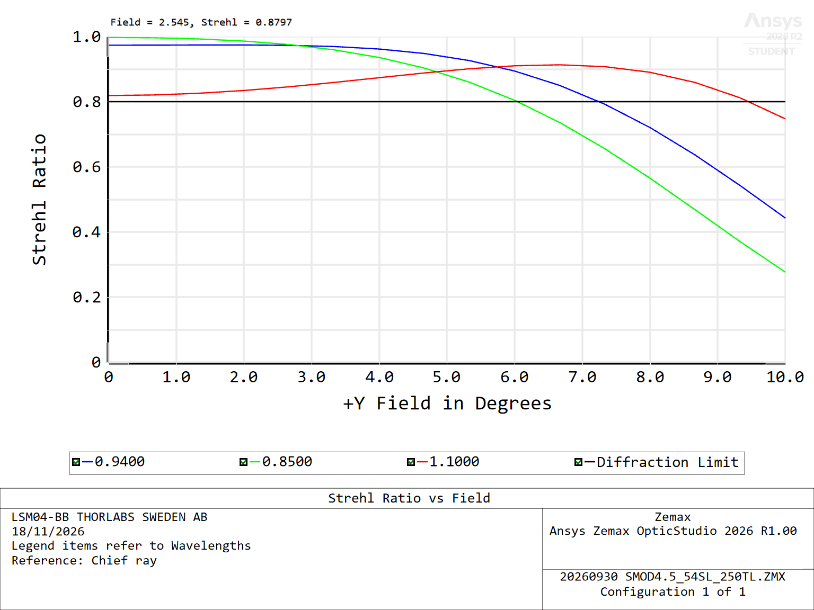
RMS wavefront error vs field
Fail off axisLog scale, because the two sets differ by two to three orders of magnitude. Zemax stays between 0.01 and 0.18 waves. Optiland rises to 33 to 44 waves, the ideal-lens artefact documented as issue 3.
Zemax is self-consistent. Its Strehl and wavefront plots agree through the Maréchal relation: 0.18 waves gives exp(−(2π·0.18)²) = 0.28, the Zemax Strehl at 10° and 0.85 µm. So the Zemax plots are a usable target for a fix.
To check after a fix: the 1.10 µm Zemax curve dips to 0.05 waves near 6.5° and then rises, while Optiland's geometric spot for 1.10 µm is the largest of the three at every angle. Only a valid wavefront calculation will show whether those fit together.
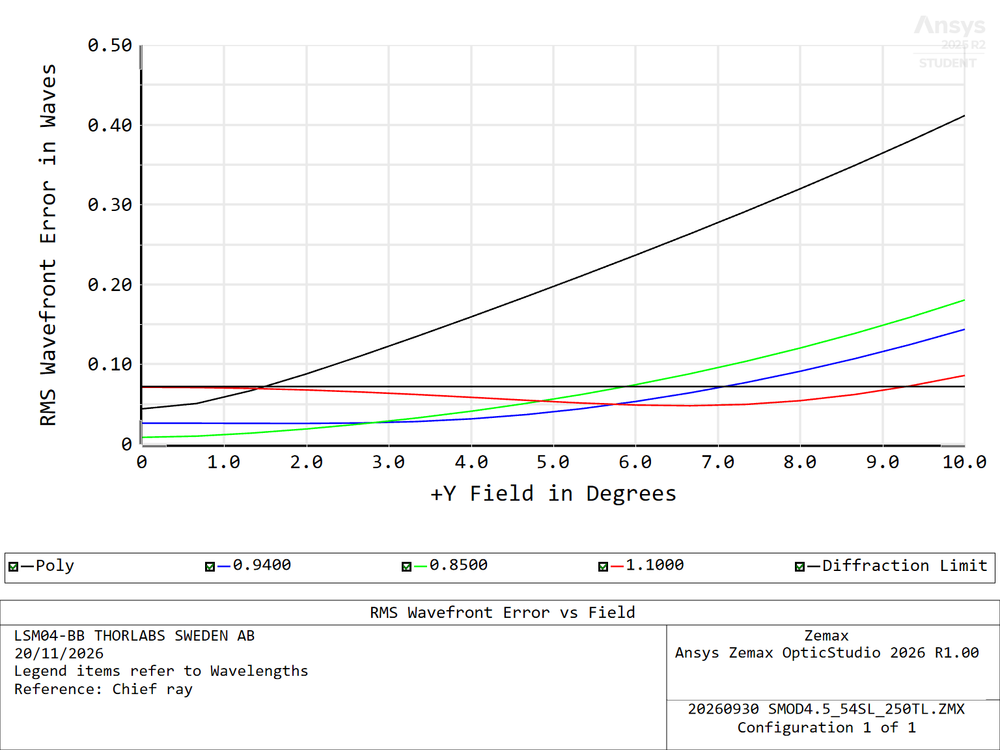
Back-aperture footprint
MatchZemax prints the extreme ray coordinates for all wavelengths and the five fields. Optiland's numbers, from the same 60-ring hexapolar trace, reproduce all three to the fourth decimal. The beam overfills the 20 mm aperture in both, and the walk is toward −y in both.
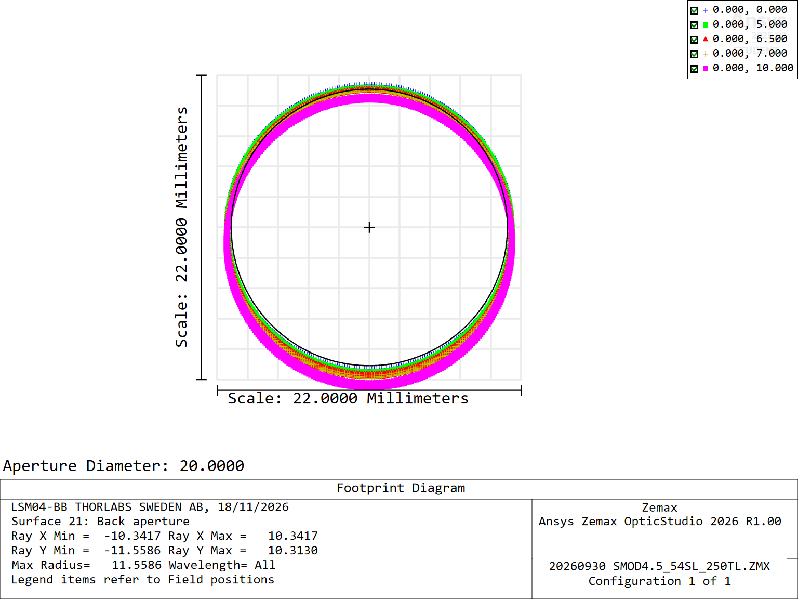
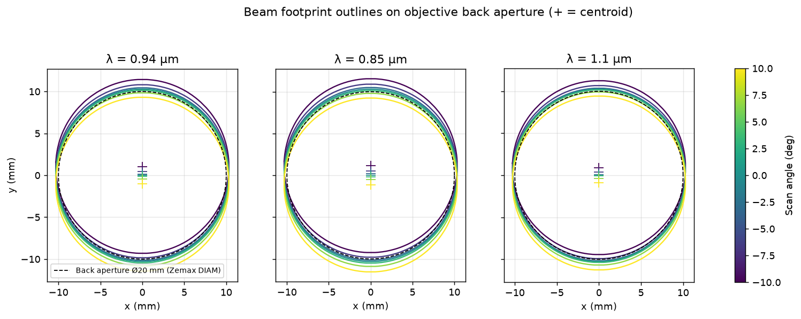
Footprint in the focal plane
MatchZemax reports a maximum radius of 0.4736 mm and a ray x spread of ±0.0021 mm at 0.85 µm. Optiland's 10° marginal ray lands at 0.47362 mm and its x spread is ±0.00208 mm. The 10° chief ray is 0.4729 mm, so the chief-ray value in the detail section agrees with Zemax once marginal rays are included.
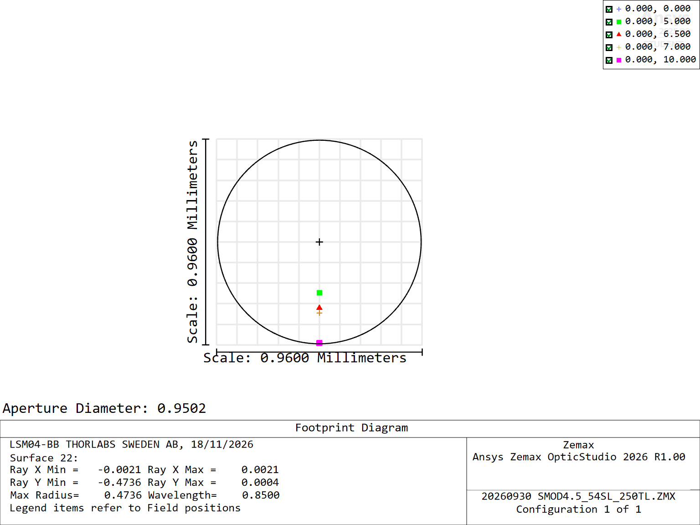
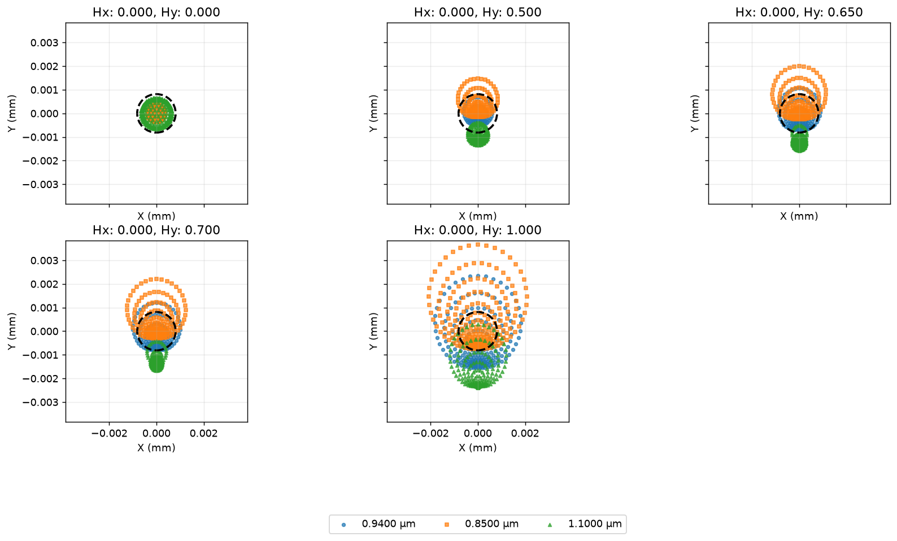
3D layout
MatchSame element order in both: galvo, scan lens doublet and singlet, PBS cube, tube lens doublets, 45° fold mirror, then the objective and focus. The fold direction in the two drawings differs only because of view orientation.
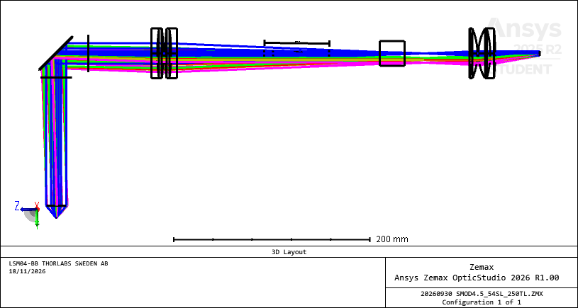
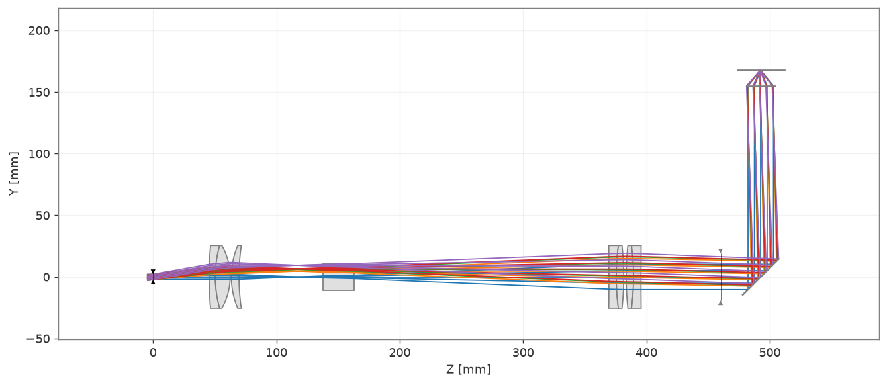
Optiland detail: summary
Seven of the nine requirements produced usable output. Two needed a workaround for an optiland bug. Strehl ratio vs field and RMS wavefront vs field are blocked: optiland returns numbers for them, but the off-axis values are wrong (see Strehl). STEP export is not available in optiland.
| Requirement | Status | Notes |
|---|---|---|
| Back-aperture footprint & conjugation, all λ | Works, patched | Needed a local fix to optiland's ideal-lens model after the fold mirror. |
| Field of view, footprint in focal plane | Works, patched | Same fix. Without it the image height is 2.7 mm instead of 0.47 mm. |
| RMS spot vs field vs diffraction limit, all λ | Works | Geometric RMS spot radius against the Airy radius. |
| RMS wavefront vs field | Blocked | Valid on axis only. Off-axis values are an artefact. |
| Strehl ratio vs field, all λ | Blocked | Valid on axis only. Same cause as RMS wavefront. |
| Field curvature & distortion | Works, unfolded | Run on an unfolded copy of the system. The folded file gives wrong reference heights. |
| Grid distortion | Works, unfolded | Crashes on the folded file; runs on the unfolded copy. |
| 3D viewer of the model | Works | optiland's viewer is a desktop VTK window; exported to glTF for this page. |
| STEP export | Not available | optiland has no CAD export. Not attempted (listed as "eventually"). |
| Lens and spacing details | Works | Surface comments are dropped on import; re-attached from the .ZMX. |
System layout and 3D model
WorksRequirement: 3D viewer of the model
The import kept all 21 surfaces: the coordinate breaks, the 45° mirror, the PBS cube and the paraxial objective. Thicknesses, radii, glasses, fields and wavelengths match the Zemax file.
Interactive 3D
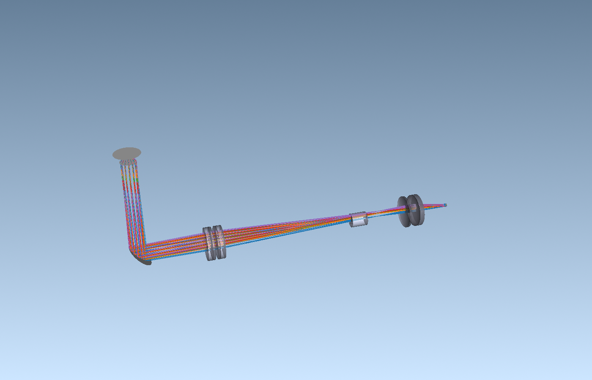
Loading 3D model…This is the scene from optiland's own VTK 3D viewer: all fields, all wavelengths, ring of 12 rays. It was rendered offscreen and exported as glTF; lens meshes were reduced to 3% of their vertices to keep the file at a few MB. Drag to rotate, scroll to zoom, right-drag to pan.
Back-aperture footprint and conjugation
Works, patchedRequirement: footprint of the back aperture, check conjugation, all wavelengths
Rays from a filled 4.5 mm pupil at the galvo, traced to the objective's back aperture (Zemax surface 21) for scan angles from −10° to +10°. If the galvo were imaged exactly onto the back aperture, every footprint would be centred and the beam would not walk.
DIAM 10). Neither Zemax nor optiland clips the beam here, because no aperture is set on that surface.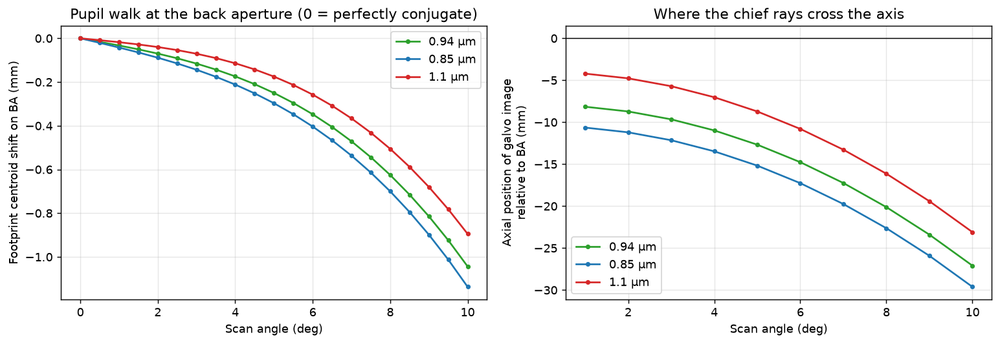
- The beam is slightly larger than the back aperture. On axis the footprint is 20.6 mm across (4.5 mm × 250/54), against a 20 mm aperture.
- The galvo is not conjugate to the back aperture. At 10° the footprint moves 1.14 mm at 0.85 µm, 1.04 mm at 0.94 µm and 0.90 mm at 1.10 µm. The walk grows faster than linearly: 0.30 mm at 5°, 1.14 mm at 10° (0.85 µm).
- The chief rays cross the axis 11 mm before the back aperture at small angles and 30 mm before it at 10° (0.85 µm). So the galvo image lies before the objective, and its position shifts with scan angle and wavelength.
Field of view at the focal plane
Works, patchedRequirement: field of view size, footprint in the focal plane
The Zemax file defines fields along y only. The system is rotationally symmetric up to the fold mirror, which is flat, so here chief rays are traced on an 11 × 11 grid of x and y scan angles over ±10° to show the full 2D scanned field.
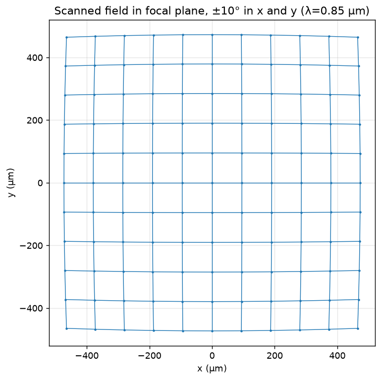
- The field is 946 µm × 946 µm. The edge midpoints sit at ±472.9 µm and the corners at (±464.7, ±464.7) µm, so the corners are pulled in by 1.7%. That is the barrel distortion shown under grid distortion.
- Cross-check: the 10° chief ray lands at 0.4729 mm. The Zemax file's image semi-diameter is 0.4751 mm, which also includes the marginal rays.
RMS vs field, against the diffraction limit
Spot worksWavefront blockedRequirement: RMS vs field plot, all wavelengths, relative to the diffraction limit
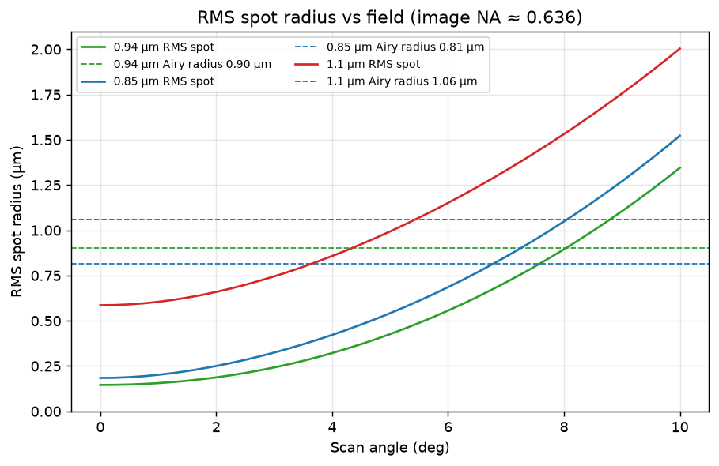
| λ (µm) | Airy radius (µm) | RMS spot at 0° | RMS spot at 10° | Below Airy up to |
|---|---|---|---|---|
| 0.85 | 0.82 | 0.18 µm | 1.52 µm | 6.8° |
| 0.94 | 0.90 | 0.15 µm | 1.35 µm | 8.0° |
| 1.10 | 1.06 | 0.59 µm | 2.00 µm | 5.4° |
On axis optiland gives 0.026 waves at 0.85 µm, which is plausible. Off axis the value rises almost linearly, to 44 waves at 10°. That can't be real: a 44-wave wavefront could not produce the 1.5 µm spots above. The cause is in optiland's ideal-lens model, explained under Strehl.
Show optiland's RMS wavefront output (invalid off axis, do not use)
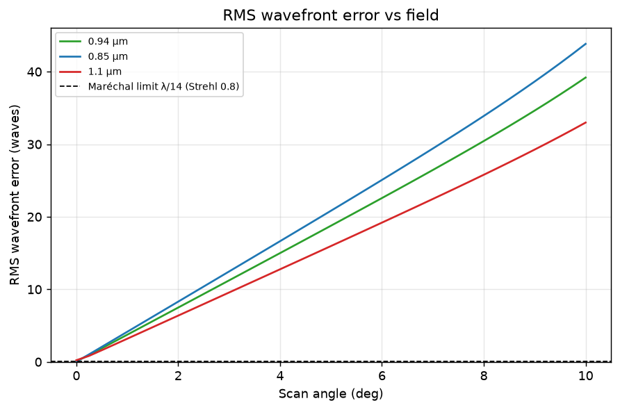
Strehl ratio vs field
BlockedRequirement: Strehl ratio vs field, all wavelengths, relative to the diffraction limit
The objective in this file is a Zemax paraxial surface: an ideal lens. Zemax treats it as perfect at every field angle. optiland's equivalent thin-lens model adds the optical path of a perfect lens for an on-axis point only. Off axis, the ideal lens itself introduces wavefront error, and at NA 0.64 that error is large.
A single ideal lens tested on its own in stock optiland shows this: 1.3 waves RMS and Strehl 0.16 at 5°, where both should be perfect. With the stop at the lens's front focal plane, which is close to this system's layout, the wavefront calculation fails with No valid ray samples found.
Every quantity built on the wavefront inherits the error: RMS wavefront, Strehl, PSF and MTF. Ray-based results (spots, footprints, distortion, field curvature) are not affected, because the thin lens bends the rays correctly.
What is usable now: on axis, FFT-PSF Strehl is 0.97 at 0.85 µm, 0.94 at 0.94 µm and 0.65 at 1.10 µm. These agree with the on-axis spot sizes. Off axis there are no valid numbers yet.
Ways to unblock:
- Fix the thin-lens optical path in optiland (issue 3 in
optiland_issues_found.md). - Replace the paraxial objective with a real lens prescription.
- Evaluate the wavefront at the back aperture instead of at the focus.
Show optiland's Strehl output (invalid off axis, do not use)
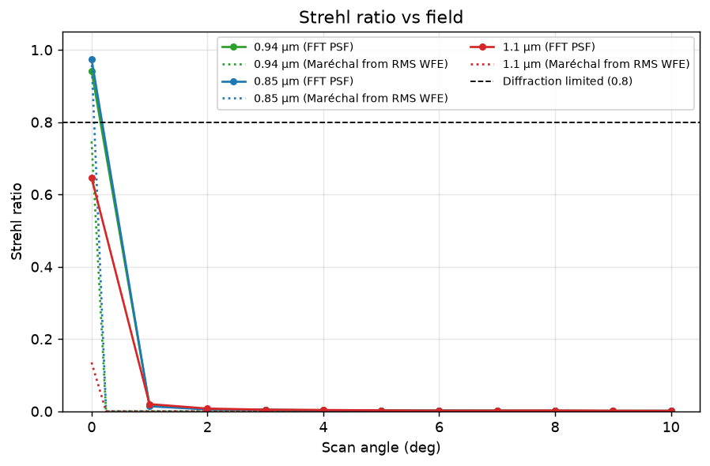
Field curvature and distortion
Works, unfoldedRequirement: field curvature and distortions
optiland's paraxial engine gets the reference image height wrong when the system contains the fold mirror: 1.29 mm instead of 0.48 mm at 10°. Distortion depends on that reference. These plots therefore use an unfolded copy of the file, with the flat mirror replaced by straight-through propagation, which is optically identical. Real-ray image heights and back-aperture positions agree between the folded and unfolded models to 10−14 mm.
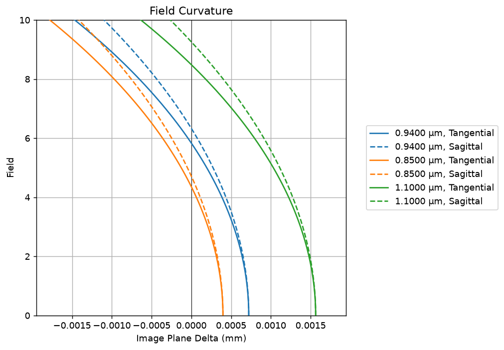
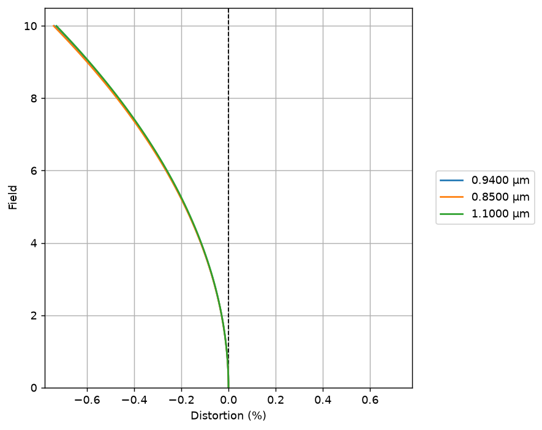
Show f-tan(θ) distortion
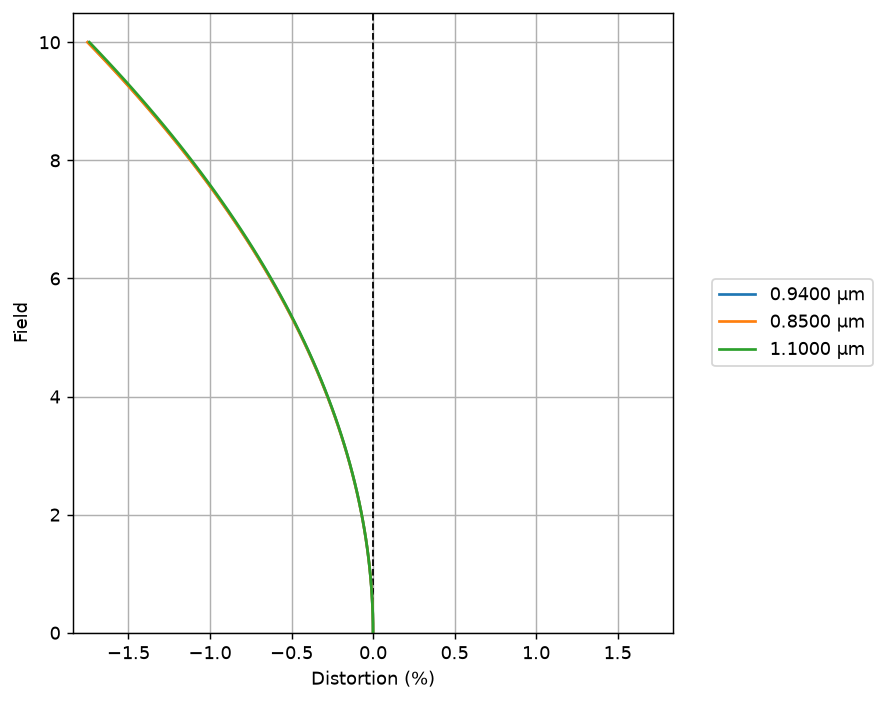
Grid distortion
Works, unfoldedRequirement: grid distortion
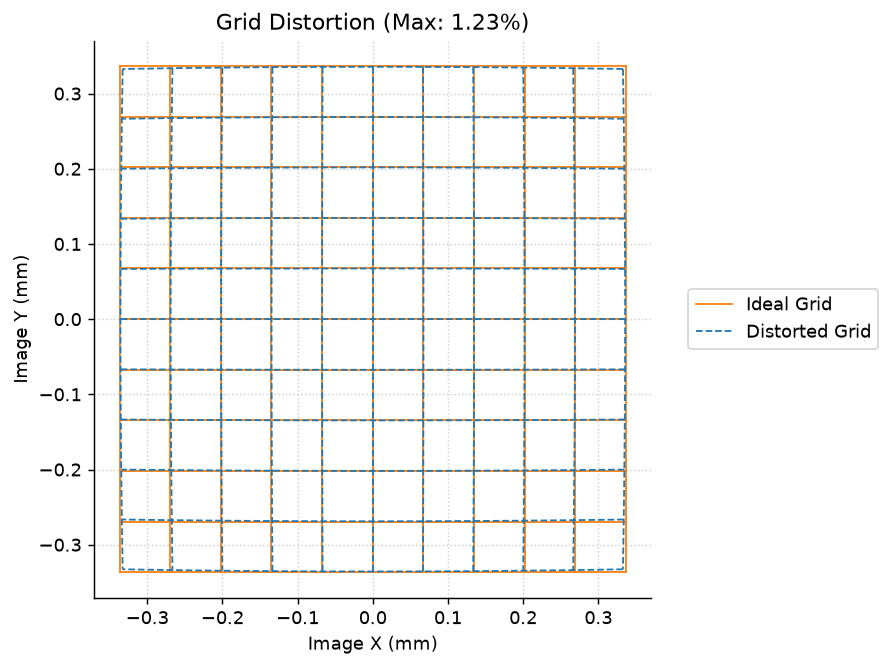
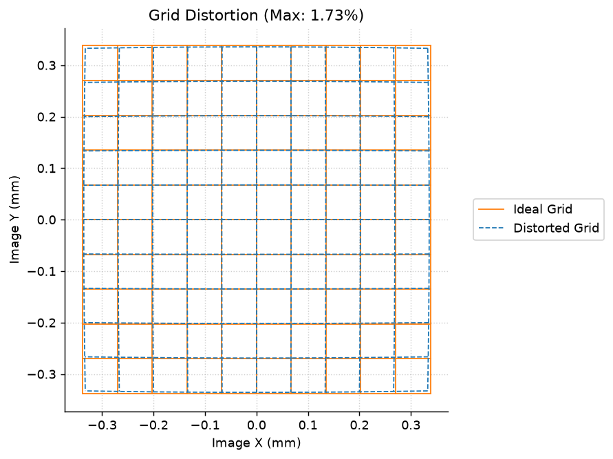
optiland scales this grid so the corners are at the 10° maximum field. The grid therefore spans ±0.34 mm, not the ±0.47 mm of the full ±10° x/y scan shown under field of view. On the folded file this analysis crashes with zero-size array to reduction operation maximum.
Spot diagrams
WorksSupporting plot: spots at the five Zemax fields, all wavelengths, all centred on the 0.85 µm (primary) chief ray. The dashed circle is the Airy disk at the primary wavelength. Axes are in mm (0.002 mm = 2 µm).
STEP export
Not availableoptiland 0.6.3 has no STEP or other CAD export. The closest it offers is the 3D mesh above, which can be exported from VTK as glTF, STL or OBJ: triangulated surfaces with no exact geometry or lens edges. This was listed as "eventually", so nothing more was attempted.
Lens data
WorksRequirement: details of the lenses and spacings
Prescription as optiland holds it, with Zemax surface numbers and comments added back. optiland drops comments on import and absorbs the two coordinate breaks (Zemax surfaces 17 and 19) into neighbouring surfaces. Negative thicknesses follow the Zemax convention after the mirror. Refractive indices are optiland's, from its own glass catalogue.
| Zemax | Comment | Type | Radius (mm) | Thickness (mm) | Material | n 0.94 | n 0.85 | n 1.10 |
|---|---|---|---|---|---|---|---|---|
| 0 | Plane | ∞ | ∞ | Air | ||||
| 1 | X-galvo | Plane (stop) | ∞ | 0 | Air | |||
| 2 | Plane | ∞ | 45.5 | Air | ||||
| 3 | Standard | 291.07 | 5 | N-SF6HT | 1.77752 | 1.78155 | 1.77226 | |
| 4 | Standard | 93.11 | 12 | N-LAK22 | 1.63956 | 1.64146 | 1.63685 | |
| 5 | AC508-075-B | Standard | -51.8 | 1 | Air | |||
| 6 | LE1015-B | Standard | 65.16 | 6.18 | N-BK7 | 1.50837 | 1.50984 | 1.50617 |
| 7 | Standard | 171.6 | 68 | Air | ||||
| 8 | PBS255 | Plane | ∞ | 25.4 | N-SF1 | 1.69574 | 1.69897 | 1.69145 |
| 9 | Plane | ∞ | 206.5 | Air | ||||
| 10 | Standard | -2471.073 | 6 | N-SF5 | 1.65382 | 1.65669 | 1.64994 | |
| 11 | Standard | 192.835 | 6 | N-SK2 | 1.59679 | 1.59851 | 1.59434 | |
| 12 | ACT508-500-B | Standard | -233.813 | 2 | Air | |||
| 13 | ACT508-500-B | Standard | 233.813 | 6 | N-SK2 | 1.59679 | 1.59851 | 1.59434 |
| 14 | Standard | -192.835 | 6 | N-SF5 | 1.65382 | 1.65669 | 1.64994 | |
| 15 | Standard | 2471.073 | 64.5 | Air | ||||
| 16 | enterance to flip cube | Plane | ∞ | 32.6 | Air | |||
| 18 | Mirror | ∞ | -24.54 | MIRROR | ||||
| 20 | underside of filp cube | Plane | ∞ | -130.5 | Air | |||
| 21 | Back aperture | Paraxial f=12.5 | ∞ | -12.5 | Air | |||
| 22 | Plane | ∞ | — | Air |
System: entrance pupil 4.5 mm at the galvo (stop). Paraxial EFL 2.73 mm, working F/0.61. Fold mirror tilted 45° about x. Aperture shapes from the file (square aperture on the PBS cube, rectangular on the mirror) are not used in these results; no rays were clipped.
optiland issues found
Full details, repro code and suggested fixes are in optiland_issues_found.md.
- 1. Ideal lens reverses rays after a mirror. optiland's thin-lens model forces rays to travel in +z. After the fold mirror they travel in −z, so they were sent backwards: 10° landed at 2.7 mm instead of 0.47 mm. Patched locally
- 2. Paraxial engine is wrong with a fold mirror. The exit pupil and the reference image height are wrong in the folded file, which breaks distortion and grid distortion. Worked around by unfolding
- 3. Ideal lens is not perfect off axis. Its optical-path term is correct only for an on-axis point. This blocks RMS wavefront, Strehl, PSF and MTF for any design with a paraxial objective, and telecentric layouts fail outright. Open
- 4. Surface comments dropped on import. Cosmetic; re-attached from the .ZMX for this page. Worked around
Reproduce
The scripts are in evaluation_tools/. optiland is installed with uv; the environment (pinned in uv.lock) lives outside Dropbox, here at ~/uv_venvs/optiland_eval_mac, and is selected with --project.
export UV_PROJECT_ENVIRONMENT=~/uv_venvs/evaluation_mac uv run python -m evaluation_tools.analyze designs/SMOD4.5 # about 2 minutes uv run python -m evaluation_tools.build_summary # regenerates all HTML
load_system.py holds the thin-lens patch and the unfolding step. analyze.py runs every analysis and build_summary.py writes this page.